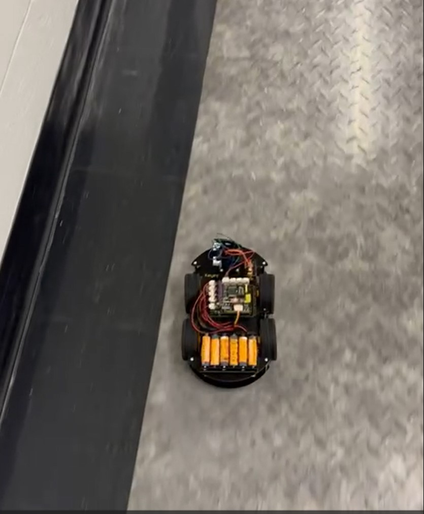
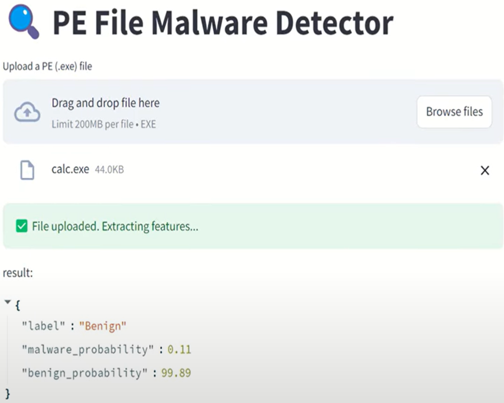
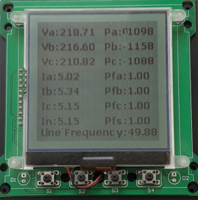
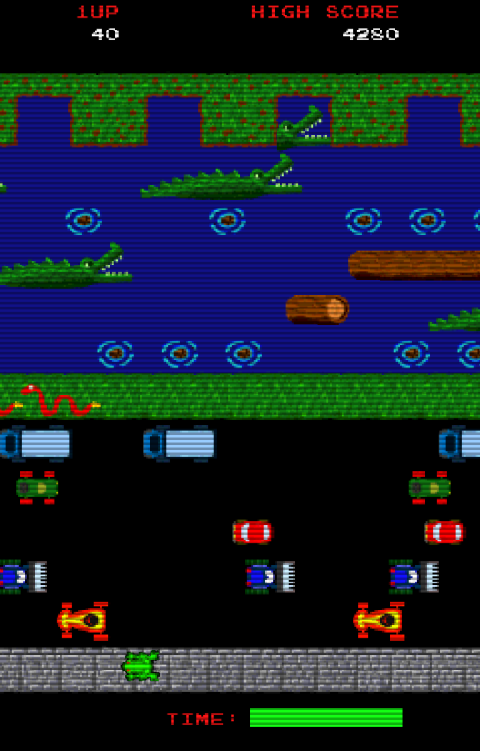
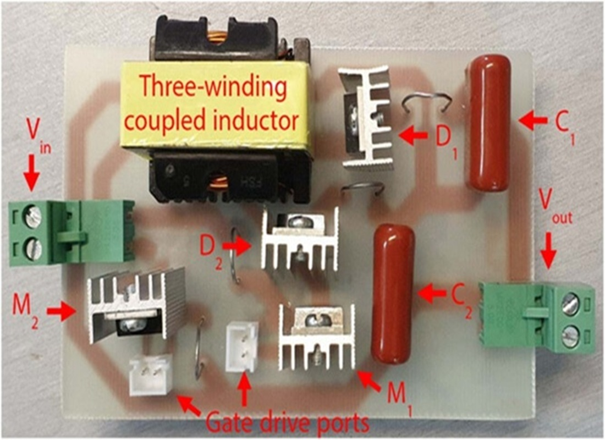

Featured Projects

MARL Grid-World Simulation
A customized multi-agent grid-world environment for testing communication protocols between agents under various conditions.

Wall-Following Mobile Robot; On-Board RL for PID Self-Tuning
Built a differential-drive robot that self-tunes PID gains on real hardware using episodic RL (modified hill-climbing). Conference paper in preparation. Code is currently private (available upon request).

MalConv-based Malware Classifier
A real-time malware detection system using deep learning, deployed with AWS SageMaker for cloud-based inference on raw executable files.
View Project
Industrial Power Meter
Designed and implemented the microcontroller firmware for an industrial power meter at Tavan Pajouh Behrad Company, enabling precise measurement and monitoring of electrical parameters in power systems.

Frogger Game on ARM Microcontroller
Designed and implemented a complete interactive game on an ARM microcontroller, featuring multiple game levels, adjustable difficulty, real-time graphics, sound effects, and joystick controls in a resource-constrained environment.
View Project
High Step-up DC-DC Converter
Designed and prototyped a novel converter with reduced switching losses and improved efficiency for renewable energy applications.
View Paper